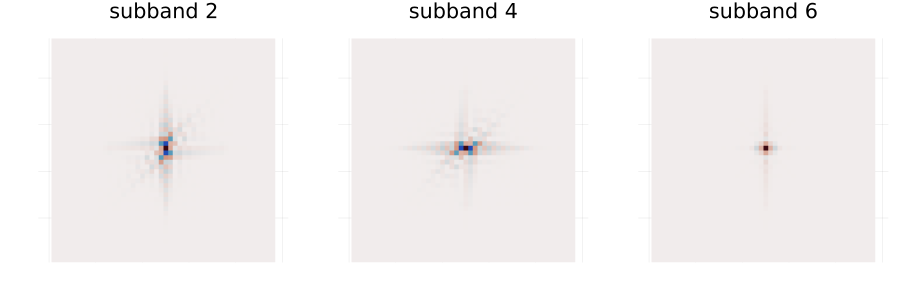

Properties of the transforms
This page shows, with checks that run when the documentation is built, what the two transforms guarantee. A surfacelet transform splits a volume into subbands: a lowpass (the coarse approximation) and, at every scale, directional subbands, each holding the frequencies of one wedge-shaped cone of directions. NSSurfacelet keeps every subband at the size of the input; Surfacelet downsamples them. Theory explains how both are built.
The examples on this page share one setup:
using Surfacelets, Random
vol = randn(Xoshiro(1), 32, 32, 32)
t = NSSurfacelet(scales = 2, direction_levels = [1, 2])
c = analyze(t, vol)
svol = randn(Xoshiro(3), 48, 48, 48)
st = Surfacelet(scales = 2, direction_levels = [1, 2])
sws = make_workspace(st, svol)
sc = analyze(st, svol; workspace = sws)Nonsubsampled transform
A Parseval frame
With the default tight = true the transform $S$ is a Parseval frame: the coefficients have exactly the energy of the volume, $\|Sx\| = \|x\|$, and the inverse is the adjoint. Thresholding denoisers and analysis-sparsity regularizers rely on this: an error added to the coefficients reaches the volume with no more energy than it had.
E = sum(i -> sum(abs2, subband(t, c, i)), 1:nsubbands(t, size(vol)))
println("‖Sx‖² / ‖x‖² = ", E / sum(abs2, vol))
@assert isapprox(E, sum(abs2, vol); rtol = 1e-10)‖Sx‖² / ‖x‖² = 1.0000000000000002Shift invariance
Shifting the volume circularly shifts every subband by the same amount:
s = (3, -2, 5)
b = analyze(t, circshift(vol, s))
err = maximum(
maximum(abs, subband(t, b, i) .- circshift(subband(t, c, i), s))
for i in 1:nsubbands(t, size(vol))
)
println("shift error: ", err)
@assert err < 1e-10shift error: 6.106226635438361e-16Redundancy
Every subband has the size of the volume, so the redundancy (coefficients per voxel) is the number of subbands, $1 + \sum_j 3 \cdot 2^{L_j}$ for direction_levels = [L_1, …, L_J]:
println(size(c), " → ", nsubbands(t, size(vol)), " subbands of size ", size(vol))
@assert nsubbands(t, size(vol)) == 1 + 3 * 2^1 + 3 * 2^2(32, 32, 32, 19) → 19 subbands of size (32, 32, 32)Decimated transform
Subband sizes and redundancy
The subbands have different sizes: a coarser scale covers a smaller frequency band and is stored on a smaller grid, and inside each scale the hourglass around axis K keeps that axis at the scale's length and downsamples the other two.
slayout = subband_layout(st, size(svol))
println("volume: ", size(svol))
println("lowpass: ", size(subband(st, sc, 1)))
for j in 1:maximum(d -> d.scale, slayout)
idx = findall(d -> d.scale == j, slayout)
println("scale $j: ", length(idx), " subbands, sizes ",
unique(size(subband(st, sc, i)) for i in idx))
endvolume: (48, 48, 48)
lowpass: (16, 16, 16)
scale 1: 6 subbands, sizes [(32, 16, 32), (16, 32, 32)]
scale 2: 12 subbands, sizes [(48, 24, 24), (24, 48, 24), (24, 24, 48)]Each hourglass stores as many coefficients as its scale has voxels, however many wedges it is cut into, so the redundancy does not grow with the number of directions:
for L in ([1, 1], [2, 2], [3, 3], [4, 4])
sp = Surfacelet(scales = 2, direction_levels = L, checkerboard_order = 4)
println("direction_levels = $L: redundancy ",
round(surfacelet_redundancy(sp, (96, 96, 96)), digits = 3),
" (nonsubsampled: ", 1 + sum(3 * 2^l for l in L), ")")
enddirection_levels = [1, 1]: redundancy 3.926 (nonsubsampled: 13)
direction_levels = [2, 2]: redundancy 3.926 (nonsubsampled: 25)
direction_levels = [3, 3]: redundancy 3.926 (nonsubsampled: 49)
direction_levels = [4, 4]: redundancy 3.926 (nonsubsampled: 97)The keyword pyramid_ratio sets the redundancy, to about 6.4, 4.0 and 3.4 for 1, 1.5 and 2, the figures Lu and Do report:
for ratio in (1, 1.5, 2)
sp = Surfacelet(scales = 3, direction_levels = [2, 2, 2], pyramid_ratio = ratio,
checkerboard_order = 4)
println("pyramid_ratio = $ratio: redundancy ",
round(surfacelet_redundancy(sp, (96, 96, 96)), digits = 2))
endpyramid_ratio = 1: redundancy 6.39
pyramid_ratio = 1.5: redundancy 4.0
pyramid_ratio = 2: redundancy 3.42Perfect reconstruction, not a tight frame
Its analysis and synthesis filters differ, so the transform reconstructs exactly but is not a tight frame: the inverse is not the adjoint, and the coefficients' energy differs from the volume's.
rec = synthesize(st, sc; workspace = sws)
energy = sum(i -> sum(abs2, subband(st, sc, i)), eachindex(slayout))
println("reconstruction error: ", maximum(abs, rec .- svol))
println("Σ‖sᵢ‖² / ‖x‖² = ", round(energy / sum(abs2, svol), digits = 3))
@assert maximum(abs, rec .- svol) < 1e-10reconstruction error: 5.773159728050814e-15
Σ‖sᵢ‖² / ‖x‖² = 3.223No shift invariance
The decimated grids do not follow a shift of the volume: the coefficients of a shifted volume are not shifted coefficients. Reconstruction is still exact.
sb = analyze(st, circshift(svol, s); workspace = sws)
rel(x, y) = maximum(abs, x .- y) / maximum(abs, x)
println("relative difference, first directional subband: ",
round(rel(circshift(subband(st, sc, 2), s), subband(st, sb, 2)), digits = 3))relative difference, first directional subband: 1.336What a surfacelet looks like
Setting a single coefficient to 1 and synthesizing gives that subband's atom: a plate-like function that oscillates along the axis of its hourglass.
using Plots
Plots.default(show = false)
atom_t = Surfacelet(scales = 1, direction_levels = [1])
atom_ws = make_workspace(atom_t, Float64, (48, 48, 48))
function atom(k)
a = analyze(atom_t, zeros(48, 48, 48); workspace = atom_ws)
subband(atom_t, a, 1 + k)[1, 1, 1] = 1.0 # one unit coefficient
return circshift(synthesize(atom_t, a; workspace = atom_ws), (24, 24, 24))
end
function panel(k)
slice = atom(k)[:, :, 25]
m = maximum(abs, slice)
return heatmap(slice, color = :balance, clims = (-m, m), aspect_ratio = :equal,
axis = false, colorbar = false, title = "subband $(1 + k)")
end
plot([panel(k) for k in (1, 3, 5)]...; layout = (1, 3), size = (900, 300))
Each panel is the central $x_3$ slice of one directional subband's atom, on its own color scale. With direction_levels = [1] each hourglass has two wedges, so subbands 2 and 4 belong to the hourglasses around axes 1 and 2 and oscillate along those axes. Subband 6 belongs to the third hourglass, whose axis is perpendicular to the slice.